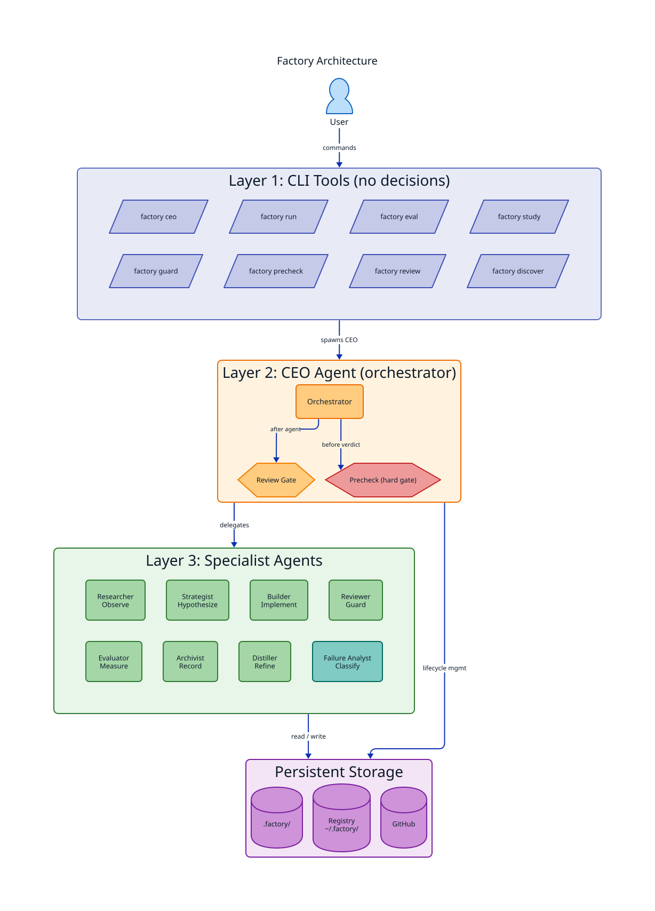
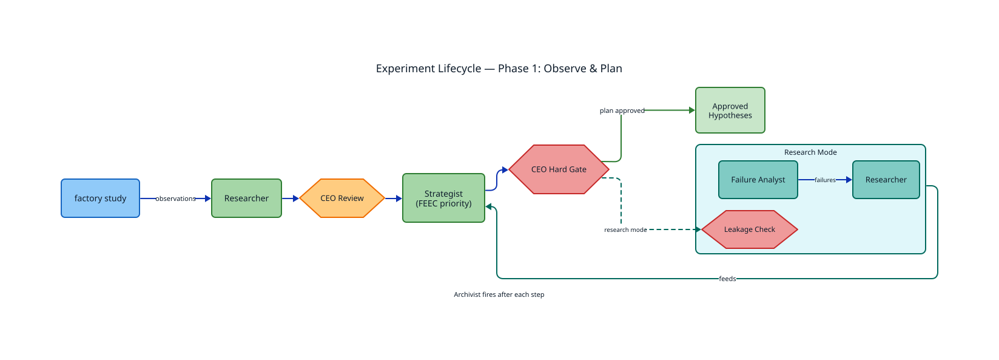
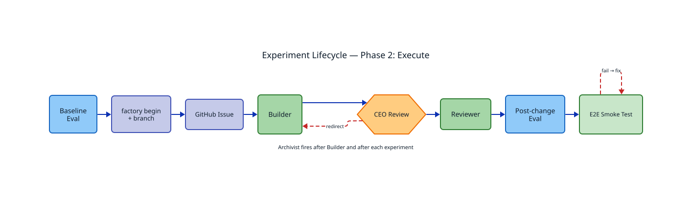
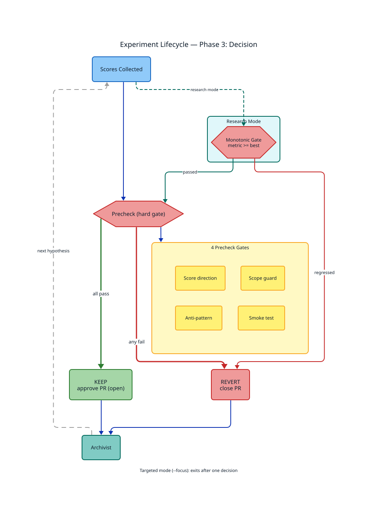
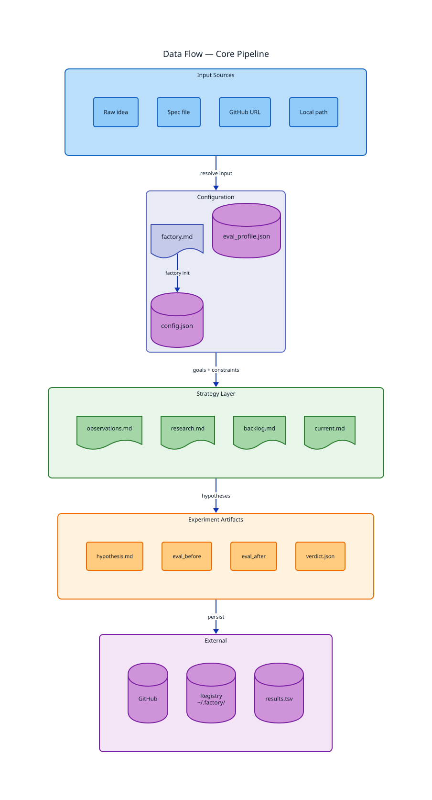
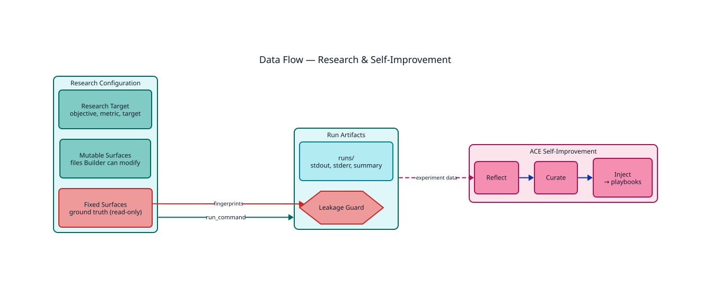
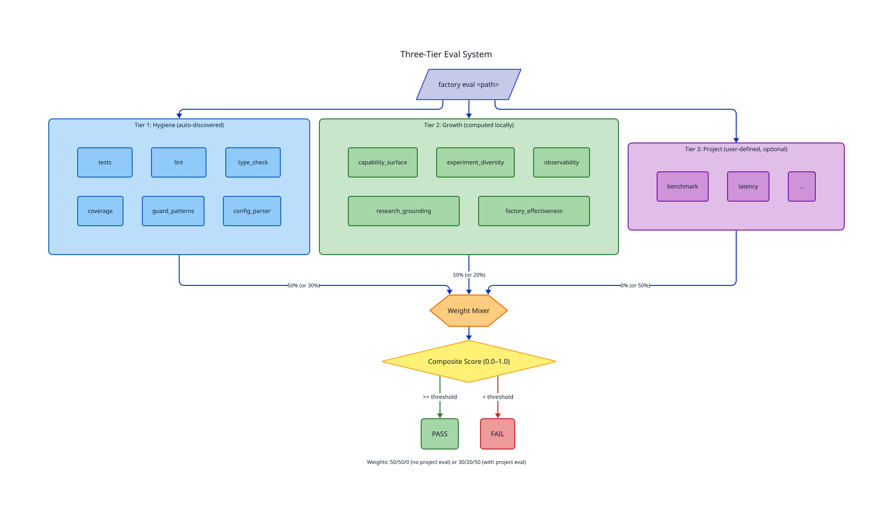

State Machine
Project state detection and mode routing. Detect → States → Modes.

Architecture
Three-layer system: CLI tools → CEO orchestrator → 8 specialist agents → storage.

Experiment Lifecycle — Phase 1: Observe & Plan
Study → Researcher → CEO review → Strategist → CEO hard gate → approved hypotheses. Research mode adds Failure Analyst and leakage checks.

Experiment Lifecycle — Phase 2: Execute
Baseline eval → begin experiment → GitHub issue → Builder → CEO review → Reviewer → post-change eval → E2E smoke test.

Experiment Lifecycle — Phase 3: Decision
Precheck hard gate with 4 checks → KEEP or REVERT. Research mode adds monotonic improvement gate.

Data Flow — Core Pipeline
Inputs → configuration → strategy → experiment artifacts → external storage.

Data Flow — Research & Self-Improvement
Research configuration with mutable/fixed surfaces, run artifacts with leakage guards, and ACE self-improvement loop.

Three-Tier Eval System
Hygiene (6 dims) + Growth (5 dims) + Project (user-defined) → weight mixer → composite score → pass/fail.
